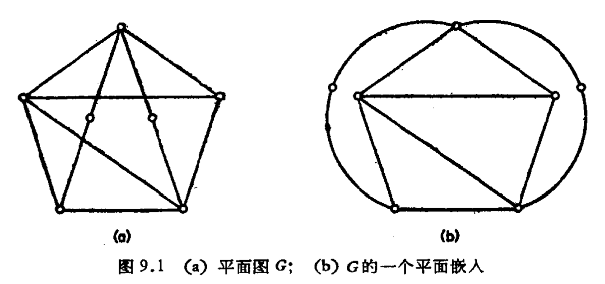
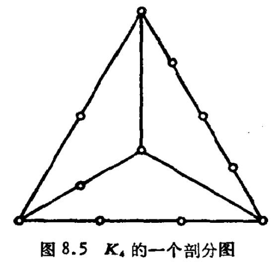
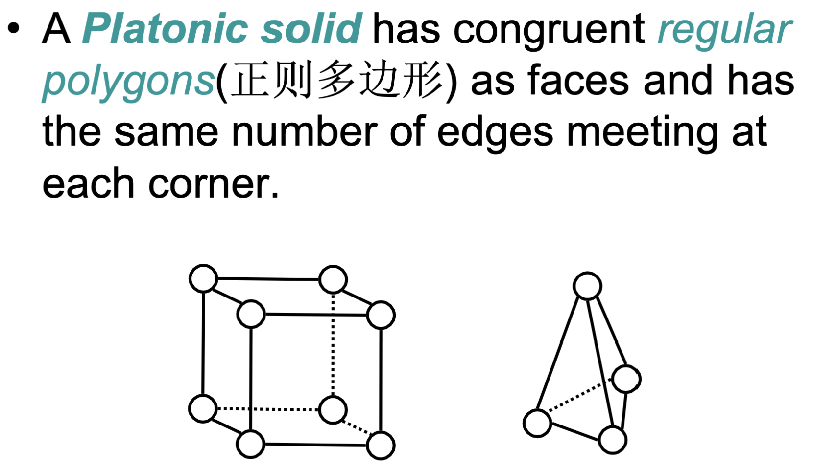
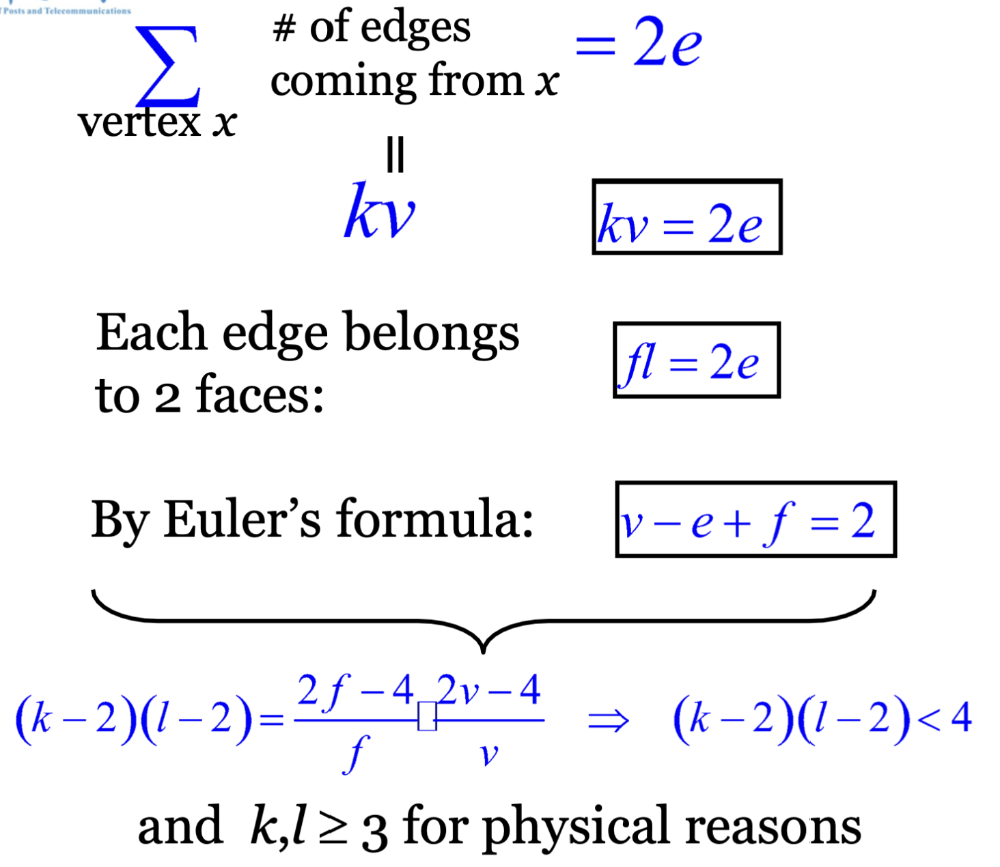

一、定义
- 如果一个图能画在平面上使得它的边仅在端点相交，则称这个图为可嵌人平面的，或称为平面图。平面图G的这样一种画法称为G的一个平面嵌人。
 - 一个平图\(G\)把平面划分成若干个连通区域，这些区域的闭包称为\(G\)的面。面边界回路的长度称为面的次数，记为\(Deg(f)\)或\(d(f)\)。
- 每个平图恰有一个无界的面，称为外部面。
二、相关性质和定理
2.1 面的次数之和与边数关系
\(\sum {d(f)} = 2\varepsilon\)
2.2 Euler公式
若\(G\)是连通平图，则有：\(\nu - \varepsilon + \phi = 2\)
简单平面图存在一个度数小于5的顶点；
# 三、判断方法
# 3.1 必要条件
1. 若\(G\)是\(v \ge 3\)的简单平面图，则\(\varepsilon \le 3\nu - 6\)。
- Euler公式
3.2 Kuratowski’s Theorem(库拉托夫斯基定理)
一个图是平面图当且仅当它不包含\(K_{3,3}\)或\(K_5\)的剖分图.
剖分图：把\(G\)的边进行一系列剖分得到的图

剖分图也可以这么理解：即用Path代替Edge。
把边\((u, v)\)删除，添加一个点\(w\)，再添加两条边\((u,w)\)和\((w, v)\)，称之为初等细分；
得到的新图和原图称之为是同胚(Homeomorphic)的；Platonic Solids(柏拉图体):
顶点数、边数(棱数)、面数的关系：
其中，\(v\)表示顶点数，\(e\)表示棱数，\(f\)表示面数，\(k\)为每个顶点的出发边的数目，\(l\)为每个面上边的数目，\(\sum deg(v) = 2e = fl = kv\).